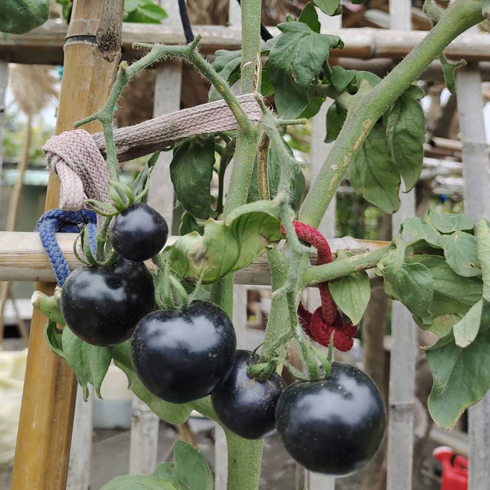

農園理念

關於風草
新竹市環保局在焚化廠入口處海濱路旁的閒置空地，建置非農地環境雜草管理示範基地「風草農園」，以養雞、種菜達到雜草管理目標，於2019年11月創立並啟用至今。將原本雜草叢生的空地，結合養雞、可食地景、青草液肥等策略，營造出兼顧雜草管理、安全食物產出與景觀美質的生態農園。風草農園的志工召集人黃清姚現年62歲，目前已退休，過去是生鮮超市的業務主管，她深感除草劑的危害，得知風草農園需要志工，便自願擔任召集人，召集鄰近5位社區媽媽，共同經營維護風草農園，為環境盡一份力量。
何謂樸門(Permaculture)？
Permaculture譯作「樸門永續設計」，原本來自permanent(永恆)+agriculture(農業)，如今更從多年生的農業系統拓展成一個涵蓋性更廣的culture文化。其核心價值為「照顧人類、照顧地球、分享多餘」，目標為「師法自然，設計與維護一個具有生產力的人為生態系」，這是一個強調人人可以應用的學問，致力於營造豐足而多樣性、整合的、自給自足而且低度環境干擾的生態系統。
三大核心

照顧地球
是我們第一優先的是要照顧地球，確保不會破壞地球的自然系統。

照顧人類
滿足人們的需求，讓人們得以生存，維持良好的生活品質，同時不致傷害地球。

分享多餘
接受人口及消費的節制，認清人類不可能在無限制增加的同時照顧好地球。
風草里程碑
2020 / 08 / 25
香蕉豐收季
2021 / 09 / 11
舉辦親子體驗活動大成功
2021 / 09 / 11
舉辦親子體驗活動大成功

2021 / 11 / 28
成功種植黑色番茄